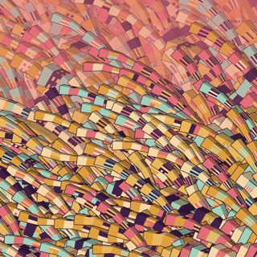
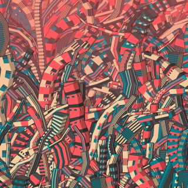

Art Blocks: the code and the token's seed are on-chain; the record, preview and live view come from Art Blocks' servers — these are our copies.
3 works · 9 files: for each work our copies of its record, its image (the preview) and its live view (the page that draws the art in a browser), each pinned at Pinata and Filebase and archived in S3. The code libraries the live views load are kept the same way. A marketplace reading the token's address goes to Art Blocks' servers, not to these copies; the copies keep the record, preview and live view if those servers stop, and their fingerprints are in the public list (see how these works are kept and proven). Artists are credited as the works' own records name them.
0xa7d8d9ef8d8ce8992df33d8b8cf4aebabd5bd270bafkreibchyagvl3l4jys7cl3j3youni56meyqbvwc2s42kbuoxzpzqdgla gateway.pinata.cloud · ipfs.filebase.io · c-ipfs-gw.nmkr.io — 2026-10-30 · pinned at Pinata and Filebase, archived in S3223e006aaf6be2712f897b4ef0ea351df3098806b616a5cd283475f2fcc06658 · 3,176 byteshttps://api.artblocks.io/token/119000272bafybeihysx5ca6664vhqbsefmfcw7thytagjuargedcvddsqlpzaq5xvou gateway.pinata.cloud · ipfs.filebase.io · c-ipfs-gw.nmkr.io — 2026-10-30 · pinned at Pinata and Filebase, archived in S340df490cec67873868a0591af3eebb344bc2a82322614b399b0a3180bea4de5e · 2,159,026 byteshttps://media-proxy.artblocks.io/1/0xa7d8d9ef8d8ce8992df33d8b8cf4aebab…bafkreievflm5kzznqveueb7j3zl3reileog3x7gtkutayx3hq5fg57xwt4 gateway.pinata.cloud · ipfs.filebase.io · c-ipfs-gw.nmkr.io — 2026-10-30 · pinned at Pinata and Filebase, archived in S3952ad9d5672d85494207e9de57b8910b238dbbfcd355260c5f67874a6efef69f · 9,202 byteshttps://generator.artblocks.io/1/0xa7d8d9ef8d8ce8992df33d8b8cf4aebabd5…
0xa7d8d9ef8d8ce8992df33d8b8cf4aebabd5bd270bafkreickwrvge5njnvpkj3hwevoddb2pwjxyb7g6ymjdaiygzml5tdirwa gateway.pinata.cloud · ipfs.filebase.io · c-ipfs-gw.nmkr.io — 2026-10-30 · pinned at Pinata and Filebase, archived in S34ab46a6275a96d5ea4ecf6255c31874fb26f80fcdec312302306cb17d98d11b0 · 3,176 byteshttps://api.artblocks.io/token/119000343bafybeih5c3ed3kzrc4x3iba7dwgh2hg7bsv5v25pkoom5mx3eutx225jsy gateway.pinata.cloud · ipfs.filebase.io · c-ipfs-gw.nmkr.io — 2026-10-30 · pinned at Pinata and Filebase, archived in S34224372cf89cc5ac46225023edb59ba1f2207ebe50c2dc82c7935e22cfdefd29 · 3,355,161 byteshttps://media-proxy.artblocks.io/1/0xa7d8d9ef8d8ce8992df33d8b8cf4aebab…bafkreihuigvebgfvbdjr7f67ehnsli5l3pie65ld2pzwkrmfuimwkcdlsq gateway.pinata.cloud · ipfs.filebase.io · c-ipfs-gw.nmkr.io — 2026-10-30 · pinned at Pinata and Filebase, archived in S3f441aa4098b508d31f97df21db25a3abdbd04f7563d3f3654585a21965086b94 · 9,202 byteshttps://generator.artblocks.io/1/0xa7d8d9ef8d8ce8992df33d8b8cf4aebabd5…
0xa7d8d9ef8d8ce8992df33d8b8cf4aebabd5bd270bafkreiclr4lh3srmqrb5regzokakyugweufstyxiehvanxquteu5ab5oi4 gateway.pinata.cloud · ipfs.filebase.io · c-ipfs-gw.nmkr.io — 2026-10-30 · pinned at Pinata and Filebase, archived in S34b8f167dca2c8443d890d97280ac50d6250b29e2e821ea06de149929d007ae47 · 3,188 byteshttps://api.artblocks.io/token/119000509bafybeiemclsqucameggtw5npquitptsk6q735wjtkdaeif6ep5bum35qfi gateway.pinata.cloud · ipfs.filebase.io · c-ipfs-gw.nmkr.io — 2026-10-30 · pinned at Pinata and Filebase, archived in S38859d75a98e33e969f3831e30e8b15bc80578e77540334f19b3cfd636701ee3e · 3,421,247 byteshttps://media-proxy.artblocks.io/1/0xa7d8d9ef8d8ce8992df33d8b8cf4aebab…bafkreibhnadc7sa6d3hufyoe2ageag3cypympxnhyixdi4475dp4jlxpxm gateway.pinata.cloud · ipfs.filebase.io · c-ipfs-gw.nmkr.io — 2026-10-30 · pinned at Pinata and Filebase, archived in S32768062fc81e1ecf42e1c4d00c401b62c3f0c7dda7c22e34739fe8dfc4aeefbb · 9,202 byteshttps://generator.artblocks.io/1/0xa7d8d9ef8d8ce8992df33d8b8cf4aebabd5…Generated archive pages. Content identifiers point to the public IPFS network.